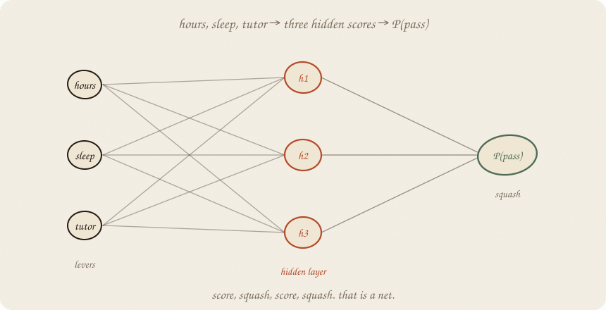
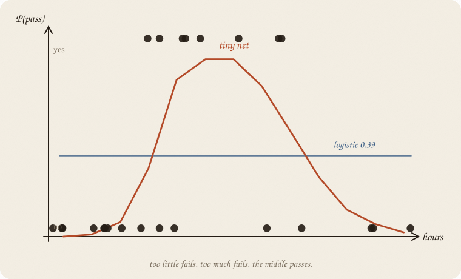
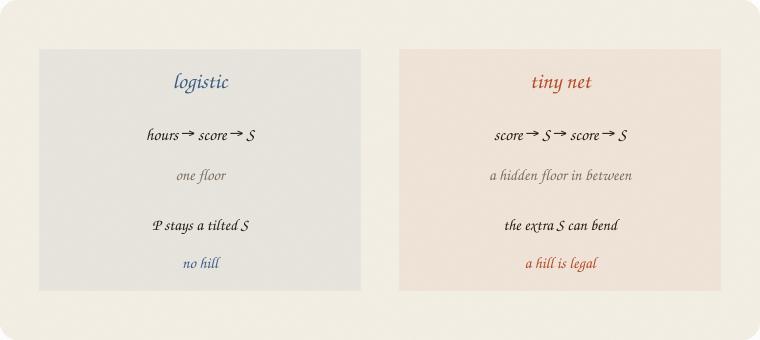
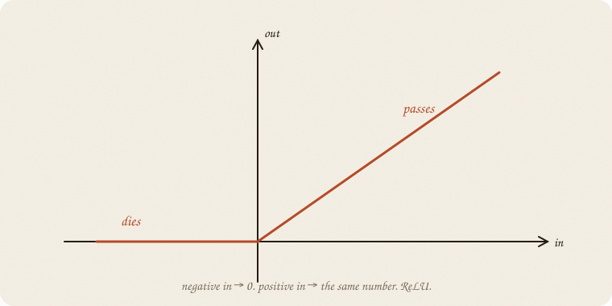
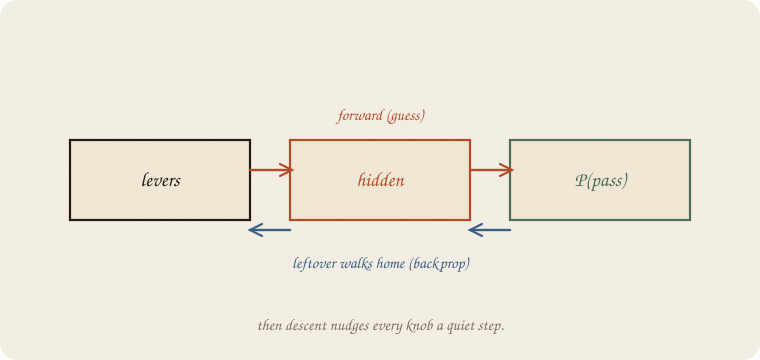
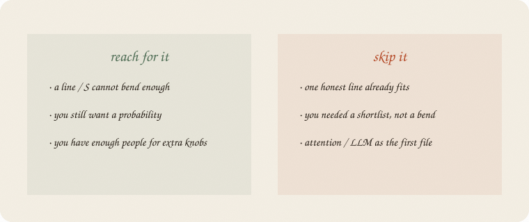

datazines · a sketchbook

Read 01 logistic regression and 01 gradient descent first. Same exam world: hours, sleep, tutor, y = did they pass? Softmax (03 softmax) is waiting at the last layer if you ever have more rooms.
Flip it like a notebook. One page = one idea. Done.
The old logistic story: more hours → more likely to pass. An S that only climbs.
This class is meaner. Too little study: fail. A solid middle: pass. Too much: burnout, fail again. Sleep still helps a little. Tutor is still a lever.
Same people. Same three knobs. The shape of y changed. A single tilted S cannot draw a hill.
Fit logistic anyway. Hours, sleep, tutor in. Scale them (the tax from ridge still applies — size of a knob is not a moral). House seed 7.
It prints a flat P ≈ 0.39 at every hours, sleep held at 6.5, no tutor. Train 0.57, test 0.60. Barely better than guessing the majority (fail).

The blue line is honest. It is also useless. The yes-dots live in the middle. Logistic has no word for “middle.”
Logistic:
hours → score → S → P(pass)
A tiny net:
hours → score → squash → score → S → P(pass)

The middle scores are the hidden layer. Three of them in this notebook. Each is a line on the levers, then a squash. The last score is a line on those three, then the familiar S.
Nothing here is magic. Two logistics glued together. The glue is what bends.
People call this a multi-layer perceptron. Ugly name. Friendly job: one extra floor of scores.
The last squash is still the S you know (so P stays in 0–1).
The hidden squash is usually cheaper: ReLU. Negative in → 0. Positive in → the same number. A hinge.

A dead unit is a unit whose score stayed negative. It contributes nothing this person. That is allowed. Three hinges, mixed, can make a hill. One S cannot.
You do not pick the hinges by hand. Descent walks the knobs until the hill appears — or doesn’t.
Forward: levers → hidden → P(pass). A guess.
The guess is wrong by some leftover. Boosting planted a tree on that leftover. Here the leftover walks backward through the floors and tells every knob which way to nudge.

People call this backpropagation. Then 01 gradient descent takes the quiet step. Same rate-knob as the bowl. Same explosion if you shout.
On 160 people, three hidden units: 16 knobs. Logistic had 4 (a plus three bs). Extra floors cost extra knobs. Extra knobs need extra people, or they memorize.
If you keep only one thing:
score, squash, score, squash. leftover walks home. then you step.
Same 160 students. Pass is a hill on hours. Logistic vs a net with 3 hidden units. House seed 7. lbfgs is a quiet walker for a tiny net — not SGD yet.
import numpy as np
from sklearn.linear_model import LogisticRegression
from sklearn.neural_network import MLPClassifier
from sklearn.pipeline import make_pipeline
from sklearn.preprocessing import StandardScaler
from sklearn.model_selection import train_test_split
rng = np.random.default_rng(7)
n = 160
hours = rng.uniform(1, 6, n)
sleep = rng.uniform(4, 9, n)
tutor = (rng.random(n) > 0.6).astype(float)
z = 1.6 - 1.35 * ((hours - 3.5) ** 2) + 0.2 * (sleep - 6.5)
passed = (rng.random(n) < 1 / (1 + np.exp(-z))).astype(int)
X = np.column_stack([hours, sleep, tutor])
Xtr, Xte, ytr, yte = train_test_split(X, passed, test_size=0.3, random_state=0)
log = make_pipeline(StandardScaler(), LogisticRegression()).fit(Xtr, ytr)
net = make_pipeline(
StandardScaler(),
MLPClassifier(
hidden_layer_sizes=(3,),
activation="relu",
solver="lbfgs",
random_state=7,
max_iter=4000,
),
).fit(Xtr, ytr)
print("pass / fail", int(passed.sum()), int((1 - passed).sum()))
print("log train/test", round(log.score(Xtr, ytr), 3), round(log.score(Xte, yte), 3))
print("net train/test", round(net.score(Xtr, ytr), 3), round(net.score(Xte, yte), 3))
m = net.named_steps["mlpclassifier"]
print("hidden units", m.hidden_layer_sizes[0], " knobs",
sum(w.size for w in m.coefs_) + sum(b.size for b in m.intercepts_))
for h in (1.5, 2.5, 3.5, 4.5, 5.5):
x = [[h, 6.5, 0]]
print(f"P | {h}h log {log.predict_proba(x)[0, 1]:.2f} net {net.predict_proba(x)[0, 1]:.2f}")
pass / fail 64 96
log train/test 0.571 0.604
net train/test 0.821 0.771
hidden units 3 knobs 16
P | 1.5h log 0.39 net 0.01
P | 2.5h log 0.39 net 0.50
P | 3.5h log 0.39 net 0.86
P | 4.5h log 0.39 net 0.37
P | 5.5h log 0.39 net 0.05
Logistic never leaves 0.39. The net is a hill: 0.01 at 1.5 hours, 0.86 at 3.5, 0.05 at 5.5. Test 0.77 vs 0.60 is the extra floor earning its keep — on these 48 people, not a law. Sixteen knobs on 112 trainers is still a small choir. A deeper net would start singing the training set.
predict_proba is the last S. hidden_layer_sizes=(3,) is the middle floor.
| word | meaning |
|---|---|
| hidden layer | extra floor of scores + squash |
| ReLU | max(0, score) — the cheap middle squash |
| sigmoid / S | last squash if you want P(yes) |
| backprop | leftover walks backward to every knob |
| MLP | sklearn’s name for this tiny net |
| knobs | every b and a on every floor |
Also called (in a room):
| here | there |
|---|---|
| leftover walking home | backpropagation |
| knobs | weights |
| squash | activation |

Reach for it when a line or one S cannot bend (a hill, a dip, “middle is different”), you still want a probability, and you have enough people for the extra knobs.
Skip it when one honest line already fits (01 linear regression / 01 logistic regression); you needed a shortlist, not a bend (03 lasso); the story is questions and rectangles (01 decision tree); you wanted attention / an LLM as the first file.
Pays you: the first machine that can draw a hill without you carving the feature. The verb of every later net. Backprop is just leftover + descent.
Costs you: knobs multiply. Scale matters. A loud rate or a fat hidden layer memorizes. The bs are no longer “+1 hour → this.” Readable floors come later (embeddings).
Nets wing, 01. Same leftover, walking backward. Next room: 02 embeddings — a word is a point.
Flip it like a notebook. One page = one idea.